Visiting Lela
POSTED 23 OCTOBER 2013
Lela is a rural village in the southwest corner of Kenya, near Lake Victoria and the Tanzanian border. The community is made up of about 2,000 people who get by on subsistence farming. I first visited Lela in June 2011 as a member of Engineers Without Borders. The Oregon State University chapter of EWB had partnered with Lela to develop a solution to the community's need for safe, accessible water. Women and children were wasting precious hours of the day walking several kilometers to gather water during the dry season. In addition, surface water sources available in the wet season were highly contaminated and were causing waterborne illnesses.
Fast forward through two years of fundraising, planning, design work, and (ultimately) implementation: Lela's residents now rely on two deep wells that access permanent aquifers, meaning they do not dry up during dry periods. In addition, a rainwater catchment at the Lela Primary School provides drinking water to roughly 450 students. These systems were built in two stages: the first well ("Lela A") and the rainwater catchment were constructed in July 2012 and the second well ("Lela B") was drilled in June 2013. The former trip was chronicled in the recent film Kel Wer.
I was anxious to visit Lela when I arrived in Kenya a month ago. As soon as my first Swahili class ended I jumped on the first bus I could to Migori, the nearest city to Lela. Charles Olang'o, Lela's village elder, greeted me enthusiastically when I arrived and escorted me to his home where I was to stay for the weekend.
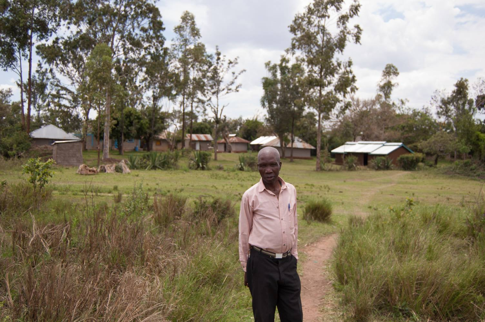Charles with his homestead in the background.
I appreciated Lela's idyllic scenery and natural open space on a new level having put up with Nairobi's traffic, pollution, crowds, and noise for a month. In Lela you can hear birds singing in the morning, wind passing through trees during the day, and crickets chirping at night. Of all the photos I took during the weekend, this one pretty much sums it all up:
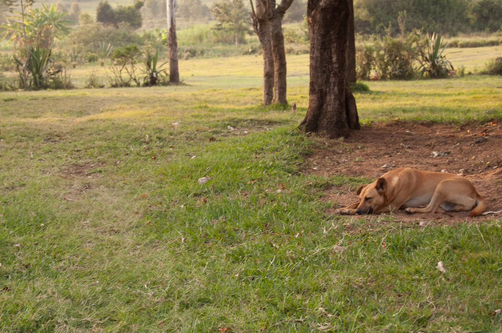After arriving, I had Charles take me to see Lela's wells. Both were functioning perfectly and were in high demand. There hasn't been much rainfall in Lela recently so surface water sources are dry. I first visited Lela A. People there were happy to see me and said they are very pleased with their new wells. Waterborne diseases have reportedly vanished, and people are spending much less time during the dry season fetching water.

What I am most proud of is the role that the Lela community has taken in managing their new infrastructure. A group known as the Lela Women's Water Committee (even though some members are men) is responsible for collecting a modest monthly fee of 20 schillings (about 20 cents) from each family that uses the wells.
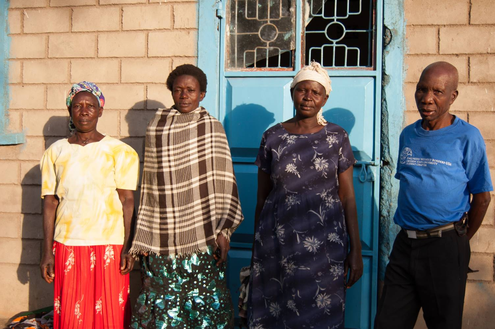Members of the Lela Women's Water Committee. From left to right: Margaret, Mary, Trufasa, and Charles.
At Lela A I met Martha, who is a member of the committee and is responsible for fee collection. She keeps track of who has paid every month in a well-organized notebook.
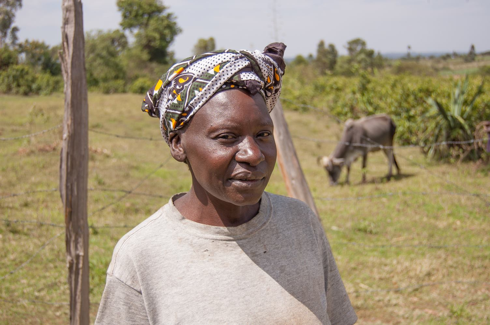 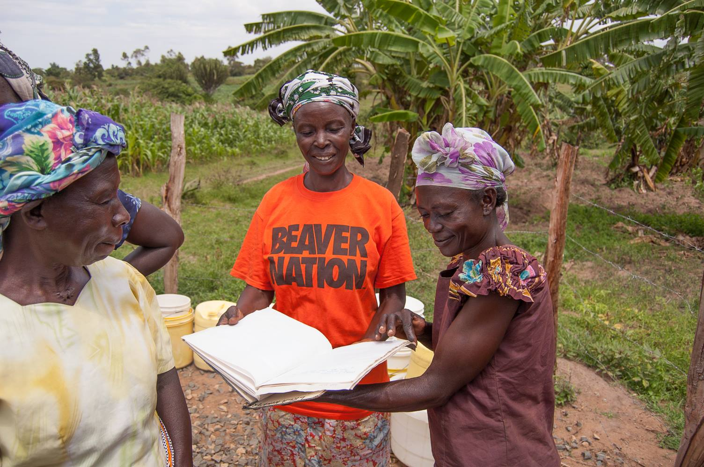Lela B was even more crowded. It was drilled right off a main road in Lela and therefore attracts many people due to its visibility and convenience.
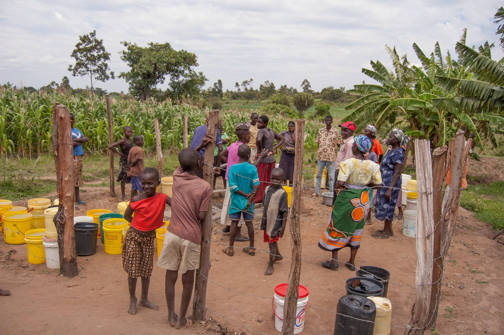A clever system has been developed by those using the wells: instead of wasting time trading off pumping duties, one or two people pump water for several buckets, which are lined up behind the pump and moved into position by another person as they are filled. A third person moves the filled buckets out of the way to be carried off.
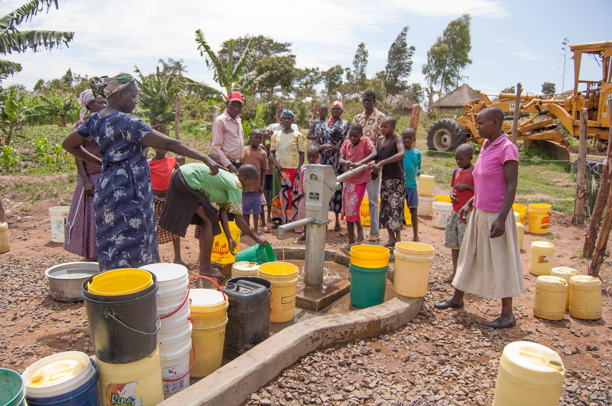 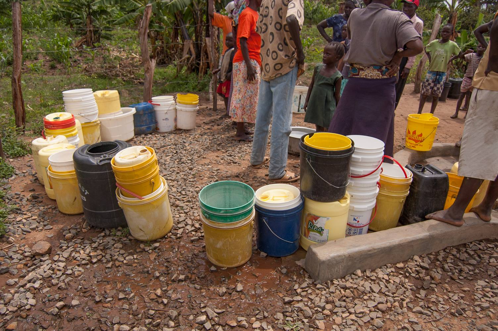 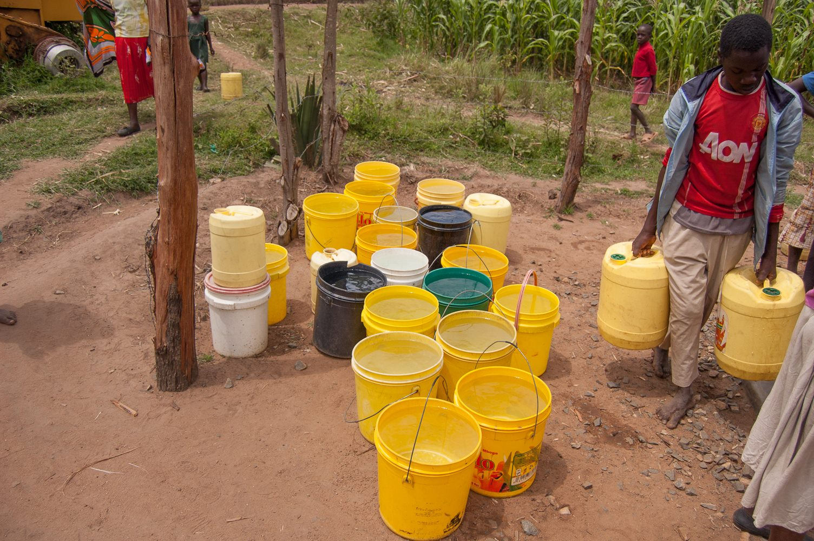
Roles rotate as people come and go or get tired. This system was efficient and filled buckets quickly. As was the case at Lela A, a designated water committee member was responsible for keeping track of well usage at Lela B. In this case it was a woman named Mary, who was happy to show me her notebook as well.
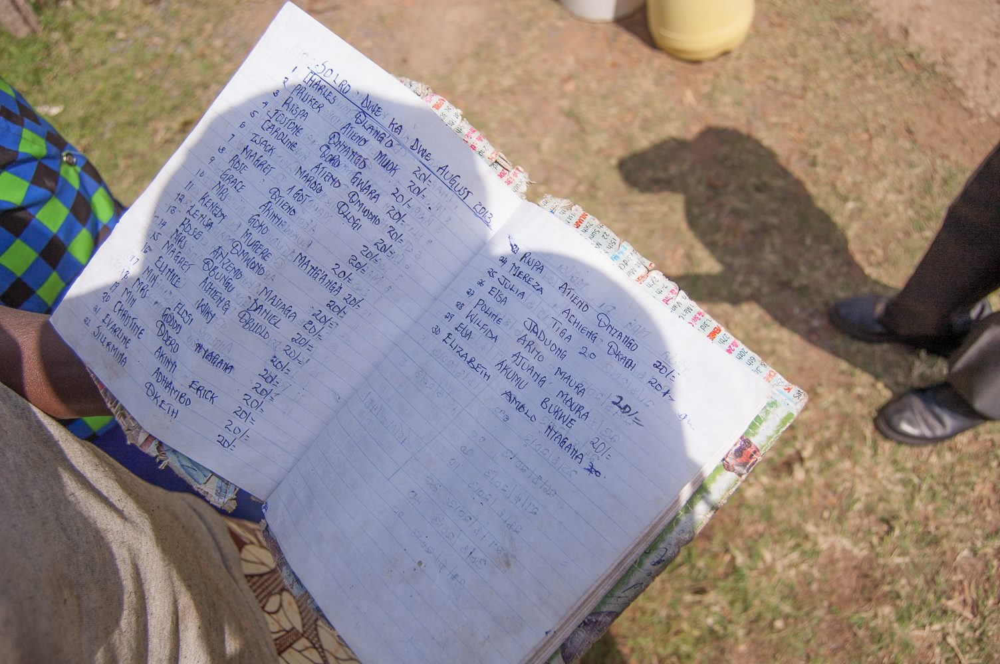OSU T-shirts were handed out as gifts to the women's committee.
Fees collected from the wells are deposited by the committee's treasurer to a savings account in Migori to be drawn upon when the well pumps require maintenance. Twenty cents per month per family may not seem like much, but with 50+ families using the wells regularly, this amounts to over $100 per year, easily enough to pay for the maintenance that can be expected for such simple hand pumps. A lack of local buy-in and management has resulted in an estimated 100,000 African wells falling into disrepair. It is easy to see why local management is so important. At some point EWB will end its partnership with Lela, and at that time it is up to the community to maintain the wells on its own.
Lela is a special place to me. I plan on returning soon for another visit. Having built close friendships with people there over the last couple years, it feels like coming home whenever I arrive. I will never be able to truly appreciate the lives they live and the challenges they face on a daily basis, but my experience has been that the people of Lela are hospitable, generous, and resilient. They care about their future and their children's future. They cooperate, they share, and to top it off they have a great sense of humor.
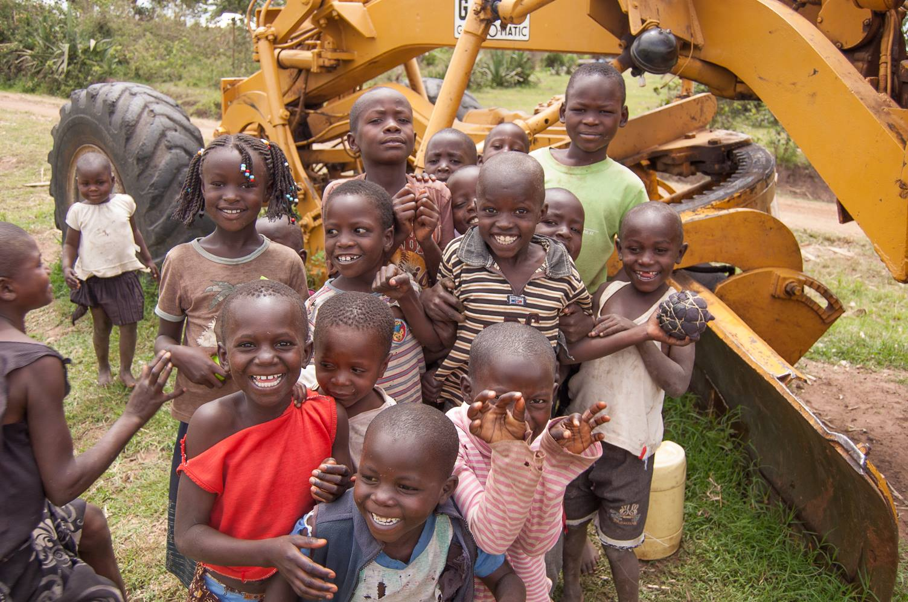